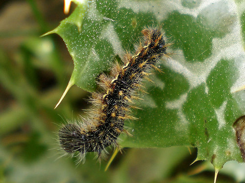
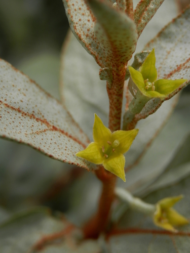

Painted Lady
Vanessa cardui butterfly / moth

Cosmopolitan migrant butterfly. Caterpillars are generalists on Asteraceae, especially thistles.
36 documented plant relationships.
sips nectar at
BlanketflowerGaillardia aristata Boreal YarrowAchillea borealis
Boreal YarrowAchillea borealis Douglas Goldman, some rights reserved (CC BY-SA), uploaded by Douglas Goldman") Canada GoldenrodSolidago canadensis
Canada GoldenrodSolidago canadensis Matt Lavin, some rights reserved (CC BY-SA)") Dotted BlazingstarLiatris punctata
Dotted BlazingstarLiatris punctata Douglas Goldman, some rights reserved (CC BY-SA), uploaded by Douglas Goldman") Flat-topped GoldenrodEuthamia graminifolia
Flat-topped GoldenrodEuthamia graminifolia Michael J. Papay, some rights reserved (CC BY), uploaded by Michael J. Papay") Flat-topped White AsterDoellingeria umbellata
Flat-topped White AsterDoellingeria umbellata Alan Prather, some rights reserved (CC BY), uploaded by Alan Prather") Giant HyssopAgastache foeniculum
Giant HyssopAgastache foeniculum peganum, some rights reserved (CC BY-SA)") Golden Currant (Buffalo Currant)Ribes aureum
Golden Currant (Buffalo Currant)Ribes aureum Tero Laakso, some rights reserved (CC BY-SA)") Jerusalem ArtichokeHelianthus tuberosus
Jerusalem ArtichokeHelianthus tuberosus Joe-Pye WeedEutrochium maculatumMany-flowered Aster (Tufted White Prairie Aster)Symphyotrichum ericoides
Joe-Pye WeedEutrochium maculatumMany-flowered Aster (Tufted White Prairie Aster)Symphyotrichum ericoides Sarah Johnson, some rights reserved (CC BY), uploaded by Sarah Johnson") MeadowsweetSpiraea albaMoss PhloxPhlox hoodii
MeadowsweetSpiraea albaMoss PhloxPhlox hoodii Tom Norton, some rights reserved (CC BY), uploaded by Tom Norton") Pearly EverlastingAnaphalis margaritacea
Pearly EverlastingAnaphalis margaritacea Tom Norton, some rights reserved (CC BY), uploaded by Tom Norton") Pin CherryPrunus pensylvanicaPrairie ThistleCirsium flodmaniiPurple ConeflowerEchinacea angustifolia
Pin CherryPrunus pensylvanicaPrairie ThistleCirsium flodmaniiPurple ConeflowerEchinacea angustifolia Douglas Goldman, some rights reserved (CC BY-SA), uploaded by Douglas Goldman") Purple-stemmed Tall Aster (Swamp Aster)Symphyotrichum puniceum
Purple-stemmed Tall Aster (Swamp Aster)Symphyotrichum puniceum bobkennedy, some rights reserved (CC BY-SA), uploaded by bobkennedy") Pussy WillowSalix discolor
Pussy WillowSalix discolor Matt Lavin, some rights reserved (CC BY-SA)") RabbitbrushEricameria nauseosa
RabbitbrushEricameria nauseosa giantcicada, some rights reserved (CC BY), uploaded by giantcicada") Red Osier DogwoodCornus sericea
Red Osier DogwoodCornus sericea Stan Shebs, some rights reserved (CC BY-SA)") Scarlet Butterfly PlantOenothera suffrutescens
Scarlet Butterfly PlantOenothera suffrutescens Douglas Goldman, some rights reserved (CC BY-SA), uploaded by Douglas Goldman") Self-healPrunella vulgarisShrubby CinquefoilDasiphora fruticosa
Self-healPrunella vulgarisShrubby CinquefoilDasiphora fruticosa pfly, some rights reserved (CC BY-SA)") Sitka ValerianValeriana sitchensis
Sitka ValerianValeriana sitchensis aarongunnar, some rights reserved (CC BY), uploaded by aarongunnar") Smooth AsterSymphyotrichum laeve
Smooth AsterSymphyotrichum laeve gwt2102, some rights reserved (CC BY)") Spreading DogbaneApocynum androsaemifolium
Spreading DogbaneApocynum androsaemifolium Matt Lavin, some rights reserved (CC BY-SA)") Spring BeautyClaytonia lanceolata
Spring BeautyClaytonia lanceolata Kevin Krebs, some rights reserved (CC BY), uploaded by Kevin Krebs") Water SmartweedPersicaria amphibia
Water SmartweedPersicaria amphibia Mary Krieger, some rights reserved (CC BY), uploaded by Mary Krieger") Western SnowberrySymphoricarpos occidentalisWhite Prairie AsterSymphyotrichum falcatum
Western SnowberrySymphoricarpos occidentalisWhite Prairie AsterSymphyotrichum falcatum tzeducation, some rights reserved (CC BY), uploaded by tzeducation") Wild BergamotMonarda fistulosa
Wild BergamotMonarda fistulosa Pohled 111, some rights reserved (CC BY-SA)") Wild ChivesAllium schoenoprasum
Wild ChivesAllium schoenoprasum Michael J. Papay, some rights reserved (CC BY), uploaded by Michael J. Papay") Willow AsterSymphyotrichum lanceolatum
Willow AsterSymphyotrichum lanceolatum
Boreal YarrowAchillea borealisCanada GoldenrodSolidago canadensisDotted BlazingstarLiatris punctataFlat-topped GoldenrodEuthamia graminifoliaFlat-topped White AsterDoellingeria umbellataGiant HyssopAgastache foeniculumGolden Currant (Buffalo Currant)Ribes aureumJerusalem ArtichokeHelianthus tuberosusJoe-Pye WeedEutrochium maculatumMany-flowered Aster (Tufted White Prairie Aster)Symphyotrichum ericoidesMeadowsweetSpiraea albaMoss PhloxPhlox hoodiiPearly EverlastingAnaphalis margaritaceaPin CherryPrunus pensylvanicaPrairie ThistleCirsium flodmaniiPurple ConeflowerEchinacea angustifoliaPurple-stemmed Tall Aster (Swamp Aster)Symphyotrichum puniceumPussy WillowSalix discolorRabbitbrushEricameria nauseosaRed Osier DogwoodCornus sericeaScarlet Butterfly PlantOenothera suffrutescensSelf-healPrunella vulgarisShrubby CinquefoilDasiphora fruticosa
SilverberryElaeagnus commutataSitka ValerianValeriana sitchensisSmooth AsterSymphyotrichum laeveSpreading DogbaneApocynum androsaemifoliumSpring BeautyClaytonia lanceolataWater SmartweedPersicaria amphibiaWestern SnowberrySymphoricarpos occidentalisWhite Prairie AsterSymphyotrichum falcatumWild BergamotMonarda fistulosaWild ChivesAllium schoenoprasumWillow AsterSymphyotrichum lanceolatum